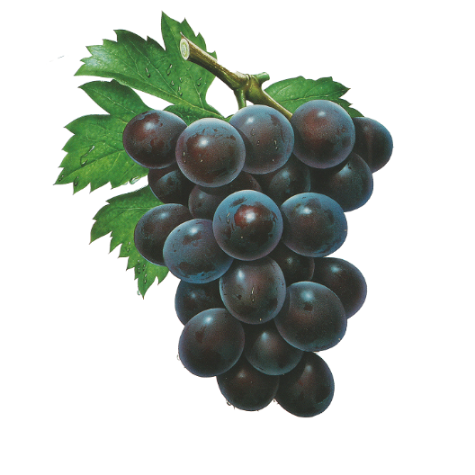
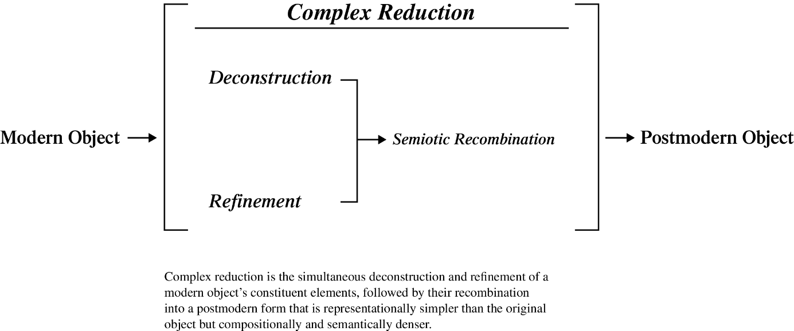
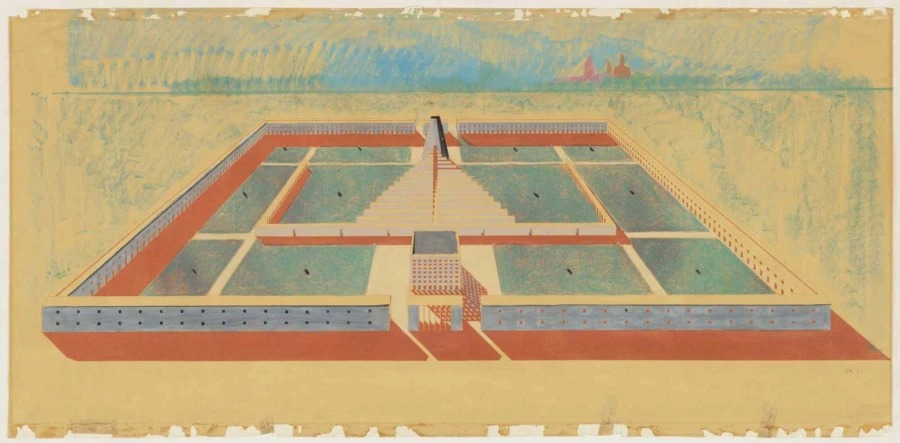
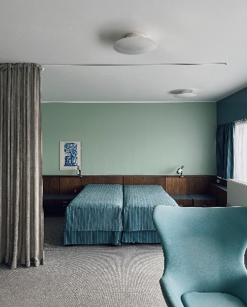
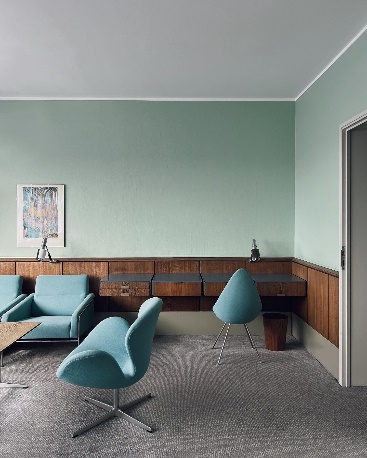
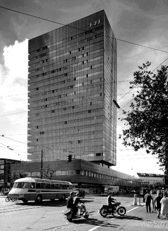

This is not an apple is a clothing collection about consumer culture that emerged from encountering Masao Saito’s airbrushed commercial food illustrations (Figure 1) and the idea of reproducing and redeveloping them using generative AI for use in a clothing collection. It is a distillation of the designers’ experiences of, reflections on, and consumption of Japanese Bubble Era consumer aesthetics (~1978 to 1991).

During the graphic development and ideation stage of This Is Not an Apple, one dominant and recurring thought arose from an encounter with Michele De Lucchi’s Continental side table. Upon seeing the side table on the cover of Casa Brutus, the object was recognized as both a cow and a distinctly postmodern object. This immediately prompted reflection on how such recognition was possible and what made it unique to postmodernism.
Answering this was crucial to the project’s aim of re-establishing its source images within a contemporary setting and wardrobe. This meant working within historical reference material while avoiding pure preservation, reproducing the past through ‘authentic cultural depiction,’ and pastiche through retrofuturism. Instead, the project sought to push toward something imaginary and new, taking the form of a common commercial product, tailored shirts.
What Continental revealed was complex reduction, a recurring tendency within postmodernism. Modernism tended to reduce objects by subordinating their constituent elements to a formalized, functional order. Complex reduction begins from this newly defined modernist paradigm, further deconstructing, refining, and recombining those elements toward a new endpoint. The representational subject therefore becomes simpler than its original, while the resulting postmodern object becomes compositionally and semantically denser.
Complex reduction was initially observed as a tendency within postmodern design, but it also lent itself as an indispensable creative method for This is not an apple. By identifying precisely how objects historically located within the chosen field of reference operated, it became possible to develop design solutions that produced novel outcomes while remaining related to the source materials and references. By clarifying how postmodern objects moved beyond their subjects, complex reduction provided a practical solution to the design problem in This is not an apple: how postmodern consumer aesthetics could be developed beyond their source material rather than preserved or reproduced. In this way, the collection’s source material contained within it the solution to transcending that very source material.
The Process of Complex Reduction

Complex reduction (Figure 2) names the process through which deconstruction, refinement, and semiotic recombination produce the postmodern object. As objects retain traces of the processes through which they are produced, so too does the resulting postmodern object. Its materials, surfaces, references, functions, and geometric relations preserve evidence of the operations through which it was separated, developed, and recombined.
Deconstruction can be understood as taking something apart, stripping it to the constituent elements and relations through which it becomes recognizable. It analytically separates the formal, symbolic, and cultural relations through which the object is made legible (Derrida, 1967/2016). This does not only mean physically dismantling the object, something more akin to disassembly or decomposition. Rather, it encompasses exposing the tensions, dependencies, and latent possibilities within its existing structure (Johnson & Wigley, 1988).
Refinement is a prolonged, staged process through which selected qualities are isolated, clarified, concentrated, intensified, and adjusted toward a finished or idealized condition. The essential qualities of an object are isolated and separated from one another to some degree; a new object is then progressively smoothed out and developed according to the logic of its existing, that is to say modern, form in order to produce something novel.
Semiotic recombination is the process through which signifiers are separated from their original contexts and recombined within a new object. This allows several meanings and associations to operate at once, overlapping, varying, and multiplying.
Representational images, through deconstruction and refinement, may become simpler than the original naturalistic form. A cow, for example, can be reduced and refined in form and detail to only its most essential and limited set of recognizable characteristics. This constitutes the first movement from premodern naturalistic depiction toward modernist abstraction. The object may then become more complex through the semiotic recombination of these essential and limited characteristics, especially when combined with multiple meanings and associations. These functions create an object that is more semantically complex than a strict modernist interpretation would permit, while still using the operational logic of modernism (Baudrillard, 1968/1996; Jencks, 1991; Venturi, 1966/2019).
The cow is conceptually deconstructed into a series of culturally and formally recognizable signs: four legs, a horizontal body, bodily mass, a basic silhouette, and a black-and-white hide pattern. Through semiotic recombination, all of the cow’s existing associations become available to the depiction: an animal, a tool, a pattern, and a set of anatomical relations, but also a structure, a piece of furniture, a landscape, a joke, a reference, an idiom, or a conceit. Complex reduction produces low representational granularity but high compositional and semantic density and is therefore a recurring, although not universal, aspect of postmodern design.
The Basic Movement of Postmodernism
Postmodernism can be understood as a constitutive reversal of modernism (Venturi, 1966/2019). However, postmodernism does not restore what modernism removed. This reversal is more like a Möbius strip: it changes direction while acting upon the structural logic of modernism- abstraction, reduction of form, geometry, and industrial production (Gropius, 1919/1974; Rams, 1995) to advance modernism toward a novel, exaggerated, or intensified form.
Modernism reduced the number of independently legible elements in an object, by subordinating them to a unified structural and functional order (Gropius, 1937; Johnson & Wigley, 1988; Loos, 1908/1998; Moholy-Nagy, 1928/1947). This produced a kind of flattening effect upon the object, an effect routinely derided over the years in popular and public-facing criticism (Blake, 1961; Gordon, 1953; MacCarthy, 2019; Mumford, 1947; Skallas, 2023; Wolfe, 1981).

Modernism’s break with the existing order of design was acutely recognizable and plainly observable to the general public because it radically transformed the shape of ordinary objects from cutlery to office buildings and was reflected in mass cultural products, from films such as Jacques Tati’s Playtime (Figure 3) and Trafic, to popular music (Arne Jacobsen Design, n.d.; Seeger, 1963; Tati, 1958, 1967). Postmodernism often “reversed” this general process by making surfaces, volumes, references, materials, and geometric components once again independently legible as theoretical and material vertices.
The basic movement describing this tendency within postmodernism is as follows:
Postmodernism increased the complexity of form while retaining the language of modernism rather than retrieving premodern styles, except through quotation or idiomatic expression (Jencks, 1991; Venturi, 1966/2019). Quotation reintroduces historical forms as self-conscious referents, while idiomatic expression retrieves the spatial, typological, or cultural relations of classicism without necessarily reproducing their original appearance.
Michael Graves’s use of quotation took the form of reintroducing classical organization, columns, colour, and Greco-Roman motifs as exaggerated signs (see Figure 4; Jencks, 1991; Nichols et al., 1990). Graves’s quotation took on a particularly postmodern sensibility when applied to the constructed environment of Disneyland (Baudrillard, 1986/2010; Nichols et al., 1990).

Aldo Rossi’s San Cataldo Cemetery (Figure 5), with its red-orange ossuary cube, provides a more idiomatic example of postmodern classical reference (Rossi, 1981). Rossi does not interpret classical form through material quotation; rather, he reconstituted the typological, civic, commemorative, and social relations associated with the cemetery and death through an abstract modern vocabulary (Rossi, 1966/1982, 1981). Rossi’s work goes back to the broader conditions of postmodern design mentioned earlier: premodern meanings were deconstructed into their constitutive elements and relations, then refined through the amplified process initiated by modernism.

The Modern Gesamtkunstwerk
The basis of the postmodern reversal is built upon modernism’s subordination of objects, functions, individual systems, and formal qualities to the unified logic of the whole, whether that whole was an architectural masterplan or an individual object. The modernist tendency toward recursive unification is evident in objects and projects such as Eileen Gray’s E.1027 adjustable side table and Arne Jacobsen’s SAS Royal Hotel, where both individual objects and complete projects are unified by their own internal logic or function while also being subordinated to larger projects. In modernism, the elements of an object were unified according to the logic of the object itself (form follows function.) Objects were then unified within their environments, while environments were unified within the overarching logic and goals of the entire project.
Eileen Gray’s side table, in particular, represents a singular element within the complete project logic of E.1027 (Figure 6) while also standing alone as its own object. The table coheres with its intended function through its material form and adjustable mechanism. Gray designed the E.1027 site, building, spatial arrangement, and interior components, including hardware, fixed and loose furniture, lamps, textiles, and colour scheme, as interdependent components of the same environment (O’Neil Ford Monograph Series, 2018). The side table’s form, adjustment mechanism, material, and use were therefore subordinated to the wider architectural programme of E.1027 while also belonging to the table’s own structural logic.


Jacobsen’s SAS Royal Hotel (Figure 7) extended this same principle across the scale of a complete architectural and commercial environment. Often cited as an exemplary project in Jacobsen’s design career, it was a Gesamtkunstwerk encompassing all the constituent elements of a hotel. Architecture, furniture, lighting, textiles, fittings, utensils, and door handles were developed as part of a fully planned design rather than as independent or curated readymade objects sourced elsewhere (Sheridan, 2011).



Modernism’s recursive unification, its subordination of many disparate elements under a single logic regardless of scale, can be seen as a development of the proto-modern concept of the Gesamtkunstwerk, or total work of art. Emerging from Romanticism and later formalized in its most well-known form by Wagner, the Gesamtkunstwerk was an attempt to unite multiple artistic forms and media within a singular, all-encompassing work (Finger & Follett, 2011; Imhoof et al., 2016). Modernism adapted this idea toward its own ends. Unity was developed through the organization of individual elements or governance of a complete project or object.
E.1027 and the SAS Royal Hotel demonstrate how the modernist Gesamtkunstwerk subordinated the elements of an individual object to the form and function of that object, while then organizing those objects to conform with the overarching project logic. The individual elements of both the objects and their organization remained legible, but their forms were mediated by the complete object or environment (O’Neil Ford Monograph Series, 2018; Sheridan, 2011). Postmodernism began from this recursively unified foundation but loosened and multiplied the relationships among its constituent elements, making more surfaces, materials, functions, and references independently available for recombination of the object or environment (O’Neil Ford Monograph Series, 2018; Sheridan, 2011).
Cow Architecture
Postmodern design increased the resolution of modernism’s inherited framework across several dimensions: formally, through more shapes, surfaces, intersections, and independently legible components; materially, through expanded uses of colour, texture, and industrial materials; productively, through new fabrication and production techniques; and semantically, through juxtaposition, contradiction, quotation, and theoretical reference (Metropolitan Museum of Art, 2004; Venturi, 1966/2019; Victoria and Albert Museum, 2023).
In postmodern design, these components are more freely allowed to separate, collide, contradict one another, or carry several meanings at once in a way that was a reaction to, against, and extension of modernism. This can be called semiotic recombination: the process by which signs, references, functions, and otherwise recognizable formal elements are separated from their original contexts and recombined within a new object, image, or structure, allowing several meanings and associations to operate at once, to overlap, vary, and multiply. The strict system of modernism is thereby subverted and exploited from a new departure point and oriented toward exhausting its possibilities.
The process of semiotic recombination, which necessarily proceeds from both deconstruction and refinement, can be demonstrated through a ten-image comparative series of pictorial or objectual depictions of cows that, through historically dispersed examples, reveals this shared formal tendency.
In the above example set, the cow is introduced as a representative premodern pastoral depiction through Aelbert Cuyp’s Cows and Herdsman by a River, which embeds the cow within a familiar atmosphere, anatomy, function, and narrative. The cow is read as a complete animal in a complete environment, reflecting and signifying a real scene through a pictorial description of realistic naturalism (Wheelock, 2001). In the second image, Charles Turner’s The Yorkshire Rose, the landscape recedes, and the viewer’s gaze is fixed on a partially abstracted yet naturalistically depicted cow. The body’s anatomical form is exaggerated into a large rectangular form, while the rest of the image remains firmly rooted in naturalistic depiction (Christie's, n.d.). In the third, Arthur Dove’s Cow advances this abstraction by depicting a cow as a mass of compressed bodily signals, overlapping curves, and tonal masses in an ambiguous spatial relationship. The cow is still recognizable as such, but no longer relies on naturalistic depiction for recognition. The “cow-ness” is instead communicated through heavily abstracted size, scale, pattern, colour, and shape (Haskell, 1974; Metropolitan Museum of Art, n.d.).
The fourth and fifth images come from Picasso’s series Le Taureau, a series of lithographs produced through Picasso’s experimentation at Fernand Mourlot’s print workshop (Museum of Modern Art, 2010). The fourth image is an intermediate state in which the basic form of the bull, a male cow, has been reorganized into an internal geometric system making up the internal divisions and structural relationships of a cow. Despite this highly abstracted state, the basic form, anatomy, and legibility of a cow remain present. The fifth image contains the final reduced state of the bull. A body consisting of fewer than a dozen lines is nevertheless still perfectly comprehensible as a bull (Museum of Modern Art, 2010; Penrose, 1958).
In Composition VIII (The Cow) by Theo van Doesburg, the cow has been fully subordinated to van Doesburg’s modernist system. The cow is recognizable to us as a spatially arranged set of rectangles relying on proportion, rhythm, and colour to remain legible to the viewer (Museum of Modern Art, 1982; Overy, 1991).
At this point in the sequence, postmodern reversal begins to appear. Starting from the reduced relationships of the modernist middle, the individual elements of the cow are available for quotation, recombination, repetition, humour and more. Roy Lichtenstein’s Cow Going Abstract references Picasso’s Le Taureau while employing Lichtenstein’s trademark Pop Art and comic-book vernacular to reimagine the cow in successive stages of deconstruction and increasing abstraction (Alloway, 1983; Roy Lichtenstein Foundation, n.d.). Andy Warhol’s Cow references premodern themes such as pastoralism and agrarian imagery but transposes them into a mass-produced decorative surface reminiscent of a consumer good. The typical pastoral image is transformed into a novel original while remaining recognizable through surface treatment, repetition, and colour (Museum of Modern Art, n.d.; Warhol & Hackett, 1980).
François-Xavier Lalanne’s Vache Paysage, or “cow landscape”, produces a cow as a design object and sculpture with a flat top resembling a console or table. An empty rectangular frame takes the place of a complete body, allowing the viewer to see through the cow and have it frame the landscape in a humorous reversal of typical pastoral imagery, wherein cows are a complement to the landscape rather than a frame through which to view the landscape (Sotheby’s, 2023).
The cow is not recognized through taking inventory of anatomical properties. Adapting Heidegger’s account of thingness to the present visual analysis, the cow’s cow-ness lies in the world of anatomical(formal) and cultural relations gathered by those properties, including bodily mass, silhouette, hide pattern, pastoral representation, agriculture, food, childhood imagery, popular culture, and the accumulated history of cattle imagery (Heidegger, 1950/1971, 1967). This is how an anatomically incorrect child’s drawing may still be recognized as a cow: it gathers enough of the relations constitutive of cow-ness for a legible image to appear. These relationships are available to artists and designers for separation, refinement, and recombination without eliminating the underlying referent.
What is a cow architecturally? A cow already has several qualities associated with domestic furniture, specifically either a table or a chair. Cows have four legs and a long horizontal body; you can sit on a cow or place objects on its back with relative ease. Were it not for the fact that it is a living, breathing animal, it could make a serviceable chair or table. Therefore, the relationship between cow and table is not completely arbitrary. It is based on an existing formal and functional analogy. The immediate reaction upon seeing Michele De Lucchi’s Continental is something like, “Oh, it’s a cow,” but how does this happen? And how did we arrive at this recognition through a specifically postmodern process (Radice, 1984)?
Continental, designed for Memphis Milano in 1984, is the final refinement of the cow as an ideal postmodern object in the comparative series. The table is made from wood covered in decorative laminate and is constructed through the intersection of several independently segmented geometric planes. In Continental, regardless of the creator’s conscious intention, the cow has been reduced to one of its simplest and most recognizable signifiers: its black-and-white hide pattern. The cow’s four legs are compressed into two, the minimum required to preserve the underlying relation, while the body is replaced by a series of intersecting prisms finished in laminate, modifying both material and form similar to van Doesburg’s interpretation. The table does not look literally like a cow, but its pattern, structure, horizontal mass, and supports preserve enough information for the association to remain legible (Radice, 1984).
The analytic series presented above is an acute example of complex reduction. The cow becomes representationally simpler while the composition becomes more complex in a logically congruent and constrained way. The new complexity is based on the framework produced by the original reduction. Because the cow in Continental has already been understood as a black-and-white biomorphic pattern, a broad horizontal form, and a body supported by paired points of support, the literal anatomy of the cow- four legs as two paired sets, black and white hide pattern, and so on can be recombined into an extremely reduced and abstracted form that contains the basic supporting relations through which the cow remains legible. The set of relationships making up the cow can then be further modified and recombined while retaining its underlying referent and associations (Baudrillard, 1968/1996; Jencks, 1991).
The Rectangle Becoming a Polygon
Note. The rectangle becoming a polygon is a visual shorthand, not a diagnostic or totalizing theory of postmodernism. In other examples, this increase can be seen in surface, colour, material, quotation, function, or symbolism rather than through a literal increase in the number or complexity of vertices.
The movement from modernism to postmodernism as demonstrated in the ten-image analytical series can be summarized as the shift from a rectangle to a polygon. If the modernist object is geometric, reduced to its basic essential elements, the postmodern parallel increases the number of visible vertices, angles, surfaces, patterns, materials, and intersections. Working from the starting point of a modernism-reduced framework, it increases the number of independently legible elements and relations within the object (Jencks, 1991).
This shift was also conditioned by changes in the technological environment. Technology does not simply provide artists and designers with a neutral set of tools. It changes the scale, pace, and pattern through which cultural forms can be produced (McLuhan, 1964). Technological development did not create postmodernism’s tendency toward fragmentation, multiplicity, contradiction, or excess; it opened new possibilities that artists and designers then exploited, according to tendencies already present within modernist culture (Carpo, 2011; Lynn, 1999).
Therefore, postmodern design does not merely reverse what modernism removed. It takes the results of that reduction as a departure point, taking apart its assumptions, ideas, and mechanisms, then accelerating, multiplying, and collapsing those elements into new forms. Through complex reduction, the represented subject becomes simpler than its naturalistic referent while becoming more compositionally and semantically complex than a strict modernist conception of that subject. The cow becomes less of a cow as a biological image, but more densely cow-like as a sign. The column does not return to a classical form, except through quotation; it becomes a complex polygon either through surface, meaning, or both. In postmodernism, the act of reduction becomes complex.
Complex Reduction as Design Method
In This is not an apple, understanding complex reduction allowed the designers to more clearly identify and reconstitute the set of relations present in Bubble Era consumer goods. Rather than preserving or reproducing the collection's source material, complex reduction was used to deconstruct, refine, and recombine its formal and cultural elements, particularly in the collection's graphic development.
In terms of graphic development, the original scans of Masao Saito's work were run through generative AI tools to produce images of items he had never illustrated, including specific crab compositions, new forms of apples, and denser floral blooms incorporating fruit and blossoms. These images were generated in the same illustration style as Saito's work but gradually drifted from the original source material, resembling some of the styles and motifs, especially flowers, present in the work of other Bubble Era airbrush artists, such as Saeko Tsumura. Flowers were a natural extension of fruit, but the vast majority of these explorations were rejected as too prosaic and as belonging to a different visual language altogether. Tsumura's best-known work drew upon an older pinup vocabulary, while flowers were generally not consumed in the same way as food or other cultural products and were therefore chronologically and conceptually inappropriate for the collection (MR. High Fashion, 1991; People's Graphic Design Archive, 2022a, 2022b).
Despite the obvious differences from Saito’s original work, the generations were insufficiently developed to meet the collection's end goal. They felt too close to a simple reflection or preservation of the source material rather than something truly original or additive. In fact, the most compelling images from the initial generations were those that accidentally revealed the process of generative AI in overt or obvious ways: crabs with too many limbs, apples with too many leaves, food with bizarre, surreal, or unnatural anatomy, and illustrations of pork belly in proportions that would never actually exist in a grocery store.
The second and third rounds of image generation were therefore designed precisely to exploit and accelerate these "failings" of generative AI and to "lean into" the medium as a deliberate design decision. In the first round, the prompts produced unexpected and unrealistic results purely by accident or due to imprecision. Many of the cheese generations did not quite look like cheese, instead appearing much greasier than actual cheese, while fish generations lacked the correct texture or resolution to be usable. During the first round, it became clear that what could be produced that was genuinely new, or at least significantly more compelling than simple reproduction, came from ‘breaking’ the AI's attempts to produce the desired subject realistically. The process was like asking an intern to create a specific item in a specific style while deliberately introducing ambiguity, juxtaposition, or uncertainty in order to produce more novel results.
One of the threads used to "break" the realism of the AI came from considering the rectangle-becoming-a-polygon summary and encountering the cover of George Benson's The Shape of Things to Come, which contains a graphic arrangement of basic three-dimensional shapes (Benson, 1968). In addition to pushing the range and complexity of the objects generated from simple food products, sets of prompts shifted toward creating illustrations that forced objects to conform to strict polygonal forms such as cubes, cones, prisms, and truncated pyramids. New textures were introduced to increase the complexity of relations and induce confusion in the viewer. One compelling quality of generative AI is its ability to create disorienting images that appear familiar but have no clear point of reference, making them nearly impossible to focus on or fully resolve. Attempting to capture this ‘anti-focal point’ image or something that induced a similar ‘impossible’ effect became incredibly desirable.
Because the collection's frame of reference was mass consumer goods, total abstraction of the kind described above was introduced only to a limited extent through texture and hybridity. Images were created in which foods transformed into other fruit species in ways that inspired both disgust and desire: a banana covered in jam, or a piece of fish cut into a perfect pyramid like some kind of deranged terrine. These images retained the commercial legibility of food illustration while introducing formal and material relationships that could not exist within the original object. They were imaginary and impossible objects, in some sense.
When it came to the packaging elements of the collection, including care tags, hangtags, and similar components, logomania and the quotation of 1980s branded tags and consumer packaging were the natural starting point. Generative AI was then applied to approximately 200 images drawn from auction listings of Bubble Era packaging across a wide range of consumer goods, including electronics, batteries, candy, confectionery, chips, ramen, musical instruments, and canned drinks. From these references, thousands of variations were generated. The variations were then sorted into idiosyncratic sets of relations and associations, since different generations reflected different aspects of Bubble Era consumer packaging. The development of the collection's own packaging proceeded from there, using the generated labels and tags as compositional starting points rather than as completed or near-completed graphics.
What the project was essentially doing was its own version of complex reduction. The individual elements of the source material, items that were decidedly postmodern both formally and chronologically, were reduced into their constituent relations. Packaging was selected because it felt distinctly and representationally 1980s, meaning source material that embodied the overarching aesthetic tendencies of the Bubble Era rather than consumer packaging that simply happened to have been released during that period but had remained largely unchanged over a longer span of time.
For example, Seiko's wordmark or corporate identity was not considered representative of the period, but many of Seiko's print advertisements were studied, and their layouts, surfaces, typography, colour, and product presentation were used to inform subsequent generations. The process depended on understanding what made these objects distinct and representative of the Bubble Era, and on studying and exploring them in a way that broke them down into independently legible parts. Those parts could then be systematically recombined into new forms and versions that attempted to move beyond simple quotation or pastiche and become original creations suitable for the collection.
Understood through the terminology established above, the design process followed the three operations of complex reduction. The source material was deconstructed into independently legible elements and relations, from which sets of prompts were developed to explore those elements in isolation and combination. These elements were then refined and recombined through extensive image generation, selection, sorting, and editing (the first two rounds alone produced nearly 50 GB of images). As in the movement from naturalistic depictions of the cow to Continental, the resulting images became less faithful to any single original referent while becoming more compositionally and semantically dense.
The design process was largely executed and iterated using large language models to compose sets of prompts derived from designer-identified traits and elements, rapidly testing and exploring ideas and their recombination through generative AI tools. The underlying logic of This is not an apple, including the identification of the source material's constituent elements, did not come from any kind of AI, but from the designers' own observations and synthesis of ideas. Generative AI produced rapid iteration, but the designers' recognition of its ‘failings,’ and of the ways those failings could be exploited to produce unexpected results, provided the direction through which those outputs were ultimately developed.
The identification of complex reduction provided a useful conceptual method that allowed the collection to move well beyond its source material while remaining connected to it. Essentially, the source material contained the means of its own transformation.
References
Alamy. (n.d.). The Seven Dwarfs stand as pillars and columns on the Team Building at the Walt Disney Studios in Burbank, California [Photograph].
Alloway, L. (1983). Roy Lichtenstein. Abbeville Press.
Amano, S., & Suzuki, R. (1986). Fruit watching: Illustration book of fruits and vegetables (M. Saito, Illus.). Graphic-sha.
Arne Jacobsen Design. (n.d.). Cutlery.
Baudrillard, J. (1996). The system of objects (J. Benedict, Trans.). Verso. (Original work published 1968)
Baudrillard, J. (2010). America (C. Turner, Trans.). Verso. (Original work published 1986)
Benson, G. (1968). Shape of Things to Come [Album]. CTI Records.
Blake, P. (1961, September 15). Are you illiterate about modern architecture? Vogue. https://archive.vogue.com/article/1961/9/are-you-illiterate-about-modern-architecture
Carpo, M. (2011). The alphabet and the algorithm. MIT Press.
Christie's. (n.d.). Charles Turner (1773–1857), after G. Horner: The Yorkshire Rose [Auction lot]. https://www.christies.com/en/lot/lot-5179163
Derrida, J. (2016). Of grammatology (G. C. Spivak, Trans.). Johns Hopkins University Press. (Original work published 1967)
Finger, A. K., & Follett, D. (Eds.). (2011). The aesthetics of the total artwork: On borders and fragments. Johns Hopkins University Press.
González Jiménez, B. S., & Ruiz Colmenar, A. (2022). Eileen Gray’s photography: An architectural journey through E.1027. ZARCH: Journal of Interdisciplinary Studies in Architecture and Urbanism, 18, 178–193. https://doi.org/10.26754/ojs_zarch/zarch.2022186170
Gordon, E. (1953, April). The threat to the next America. House Beautiful.
Gray, E., & Badovici, J. (1929). E.1027: Maison en bord de mer. L’Architecture Vivante.
Gropius, W. (1937). The new architecture and the Bauhaus (P. M. Shand, Trans.). Museum of Modern Art.
Gropius, W. (1974). Programme of the Staatliches Bauhaus in Weimar. In H. M. Wingler, The Bauhaus: Weimar, Dessau, Berlin, Chicago (W. Jabs & B. Gilbert, Trans., pp. 31–33). MIT Press. (Original work published 1919)
Haskell, B. (1974). Arthur Dove. San Francisco Museum of Art.
Heidegger, M. (1967). What is a thing? (W. B. Barton Jr. & V. Deutsch, Trans.). Henry Regnery Company.
Heidegger, M. (1971). The thing. In Poetry, language, thought (A. Hofstadter, Trans., pp. 163–186). Harper & Row. (Original work published 1950)
Imhoof, D., Menninger, M. E., & Steinhoff, A. J. (Eds.). (2016). The total work of art: Foundations, articulations, inspirations. Berghahn Books.
Jencks, C. (1991). The language of post-modern architecture (6th ed.). Academy Editions.
Johnson, P., & Wigley, M. (1988). Deconstructivist architecture. Museum of Modern Art.
Loos, A. (1998). Ornament and crime. In A. Opel (Ed.), Ornament and crime: Selected essays (M. Mitchell, Trans.). Ariadne Press. (Original work published 1908)
Lynn, G. (1999). Animate form. Princeton Architectural Press.
MacCarthy, F. (2019). Gropius: The man who built the Bauhaus. Belknap Press of Harvard University Press.
McLuhan, M. (1964). Understanding media: The extensions of man. McGraw-Hill.
Metropolitan Museum of Art. (2004). Design, 1975–2000. https://www.metmuseum.org/essays/design-1975-present
Metropolitan Museum of Art. (n.d.). Arthur Dove: Cow. https://www.metmuseum.org/art/collection/search/488519
Moholy-Nagy, L. (1947). The new vision, 1928: Fourth revised edition, 1947, and abstract of an artist (D. M. Hoffmann, Trans., 4th rev. ed.). Wittenborn. (Original work published 1928)
MR. High Fashion. (1991). MR. High Fashion (No. 54) [Magazine].
Mumford, L. (1947, October 11). Status quo. The New Yorker. https://www.newyorker.com/magazine/1947/10/11/the-sky-line-3
Museum of Modern Art. (1982). De Stijl, 1917–1931: Visions of utopia. Museum of Modern Art.
Museum of Modern Art. (2010). Picasso: Variations and themes. Museum of Modern Art.
Museum of Modern Art. (n.d.). Andy Warhol: Cow, 1966. https://www.moma.org/collection/works/71923
Nichols, K., Burke, P., & Hancock, C. (Eds.). (1990). Michael Graves: Buildings and projects, 1982–1989. Princeton Architectural Press.
O’Neil Ford Monograph Series. (2018). E.1027, Eileen Gray. University of Texas at Austin School of Architecture.
Overy, P. (1991). De Stijl. Thames & Hudson.
People's Graphic Design Archive. (2022a). Fruit Watching Illustration Book of Fruits and Vegetables [Archive entry]. https://peoplesgdarchive.org/item/6292/fruit-watching-illustration-book-of-fruits-and-vegetables
People's Graphic Design Archive. (2022b). Super-Real Illustration [Archive entry]. https://peoplesgdarchive.org/item/6267/super-real-illustration
Penrose, R. (1958). Picasso: His life and work. Victor Gollancz.
Petschek, E. (n.d.). [Photographs of Room 606 in Arne Jacobsen’s SAS Royal Hotel] [Instagram post]. Instagram. https://www.instagram.com/p/CfTU3Pfuzhd/
Radice, B. (1984). Memphis: Research, experiences, results, failures and successes of new design. Rizzoli.
Rams, D. (1995). Ten principles for good design. In Less but better. Jo Klatt Design + Design Verlag.
Rossi, A. (1981). A scientific autobiography. MIT Press.
Rossi, A. (1982). The architecture of the city (D. Ghirardo & J. Ockman, Trans.). MIT Press. (Original work published 1966)
Roy Lichtenstein Foundation. (n.d.). Cow Triptych (Cow Going Abstract) [Catalogue entry]. https://lichtensteinfoundation.org/image-database/
Seeger, P. (1963). Little boxes [Song]. On Broadside ballads, Vol. 2. Folkways Records.
Seiko. (n.d.). Hybrid and SilverWave print advertisements [Advertisements]. Images supplied by the authors; original publication details unidentified.
Sheridan, M. (2011). Room 606: The SAS House and the work of Arne Jacobsen. Phaidon Press.
Sheridan, M. (2023). Room 606: The SAS House and the work of Arne Jacobsen. Strandberg Publishing.
Skallas, P. (2023, January 1). Refinement culture. The Lindy Newsletter. https://lindynewsletter.beehiiv.com/p/refinement-culture
Sotheby’s. (2023). François-Xavier Lalanne: “Vache Paysage” (Grand Modèle) [Auction lot]. https://www.sothebys.com/en/buy/auction/2023/important-design-7/vache-paysage-grand-modele
Strüwing, A. (1960). SAS Royal Hotel, Copenhagen [Photograph]. Jørgen Strüwing Collection.
Taste Bologna. (2021, January 22). Aldo Rossi’s San Cataldo Cemetery in Modena: Guide & visit. https://www.tastebologna.net/blog/modena-cemetery
Tati, J. (Director). (1958). Mon oncle [Film]. Specta Films.
Tati, J. (Director). (1967). Playtime [Film]. Specta Films.
This is not an apple design archive. (2026). Generated image sets, prompt sheets, packaging reference archive, and garment development materials [Unpublished project archive].
Venturi, R. (2019). Complexity and contradiction in architecture. Museum of Modern Art. (Original work published 1966)
Victoria and Albert Museum. (2023). What is postmodernism? https://www.vam.ac.uk/articles/what-is-postmodernism
Warhol, A., & Hackett, P. (1980). POPism: The Warhol ’60s. Harcourt Brace Jovanovich.
Wheelock, A. K., Jr. (2001). The public and the private in the age of Vermeer. Philip Wilson Publishers.
Wolfe, T. (1981). From Bauhaus to our house. Farrar, Straus and Giroux.